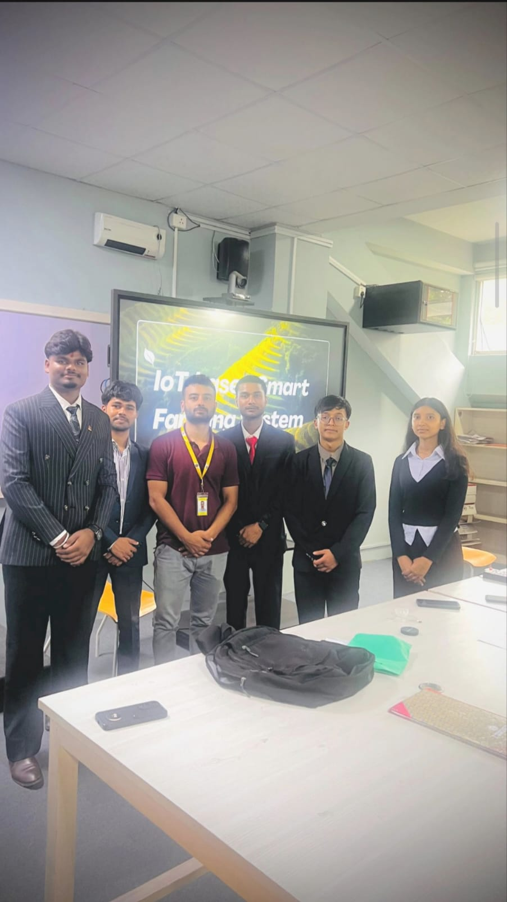
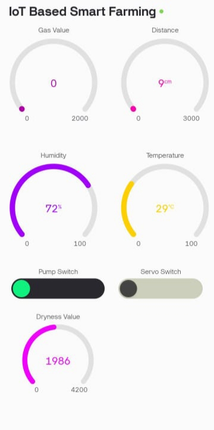
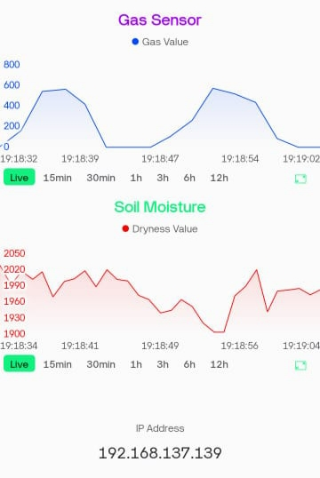

IoT-Based Advanced Farming System
A hands-on IoT based smart farming prototype built to keep track of soil conditions and surroundings so plants get what they need at the right time.
- ESP32 and sensor integration
- Blynk-based IoT monitoring and control
- Local HTML, CSS, and JavaScript dashboard
- Hardware-software integration and debugging
Sensors→ESP32→Blynk / Local Web Dashboard
Challenge solved: Fixed unexpected board reboots and prevented hardware burnout caused by unstable power delivery.
View on GitHub ↗